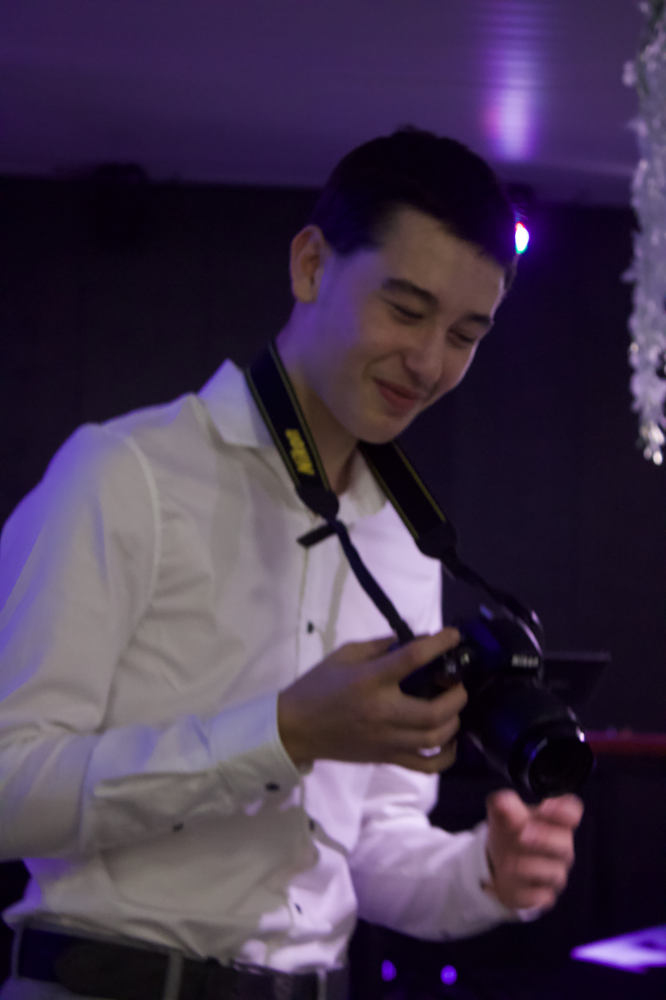

Startseite
Personalien
Schulbildung
Zertifikate
Berufserfahrungen
Sprachen
Referenz
Hobbys
Kontakt
Hobbys
Schach
Strategie und Taktik!
Schlagzeug
Rhythmus und Leidenschaft!
MMA / BJJ
Technik, Disziplin & Kraft!
Fotografieren

Momente für die Ewigkeit!